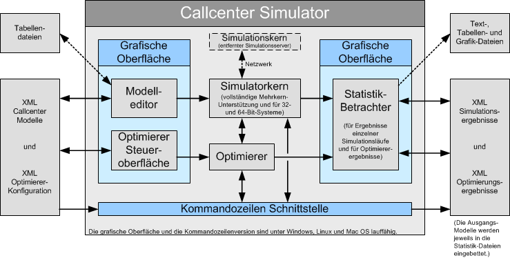

Der Simulator kann Callcenter-Modelle als xml-Dateien lesen und schreiben und stellt auch die Simulationsergebnisse in Form von xml-Dateien zur Verfügung. Aufgrund der eingebauten grafischen Oberfläche ist der manuelle Umgang mit den Datendateien vielfach jedoch überhaupt nicht notwendig. Soll der Simulator jedoch in einem größeren Reporting-System eingesetzt werden, so kann er vollständig über diese vollständig dokumentierten Austauschformate gesteuert werden.
